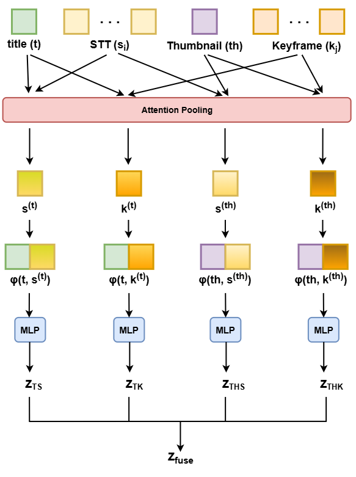

Reward Hacking Mitigation
Comparing regularization strategies to mitigate reward hacking in Best-of-N sampling.
Ongoing projectUndergraduate student at Seokyeong University
I am an undergraduate student in Electronics & Computer Engineering at Seokyeong University, and an undergraduate researcher at RACS.
I am interested in making language models more reliable and computationally efficient at inference time.
My work focuses on sampling and regularization methods for more reliable inference-time alignment.
Comparing regularization strategies to mitigate reward hacking in Best-of-N sampling.
Ongoing projectReproducing Value-Guided Backtracking for language model generation.
Read the reportAttention-based Pairwise-Semantic Fusion for YouTube Clickbait Detection. Changmin Jeon, Hayeong Ryu, Youngwan Cho. Public release forthcoming Paper
A multimodal framework for detecting semantic mismatches between YouTube titles and thumbnails and the actual video content. It combines titles, ASR transcripts, and captions of thumbnails and keyframes using Sentence-BERT embeddings and attention-based pairwise fusion.

Recent work proposes several ways to mitigate reward hacking in Best-of-N (BoN) inference-time alignment, including EM-regularized BoN, χ2-regularization, caution-penalty BoN, and InfoRM. These methods are mostly evaluated against standard baselines rather than against each other, so a fair comparison under one setting is still missing. This project has two goals:
Independent implementation of VGB from Taming Imperfect Process Verifiers, for which no official code exists. All five of the paper's tasks are reproduced: ABC, Parity, Dyck grammar, Python test-case generation and letter avoidance.
Research and career updates.
Seokyeong UniversityB.S. in Electronics & Computer Engineering, AI Track
For research discussions or collaboration, email me at ckdals560@gmail.com.